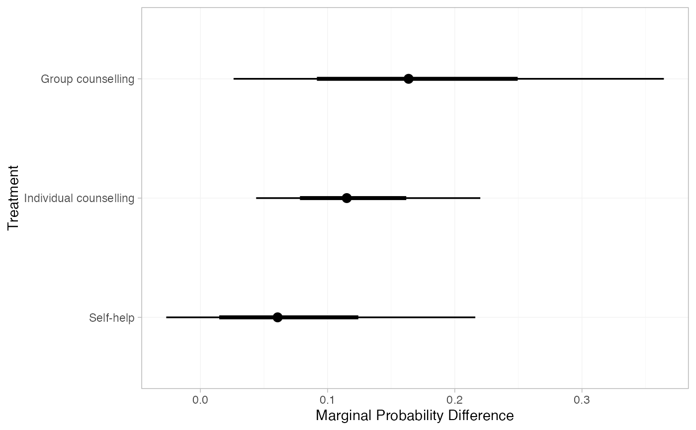
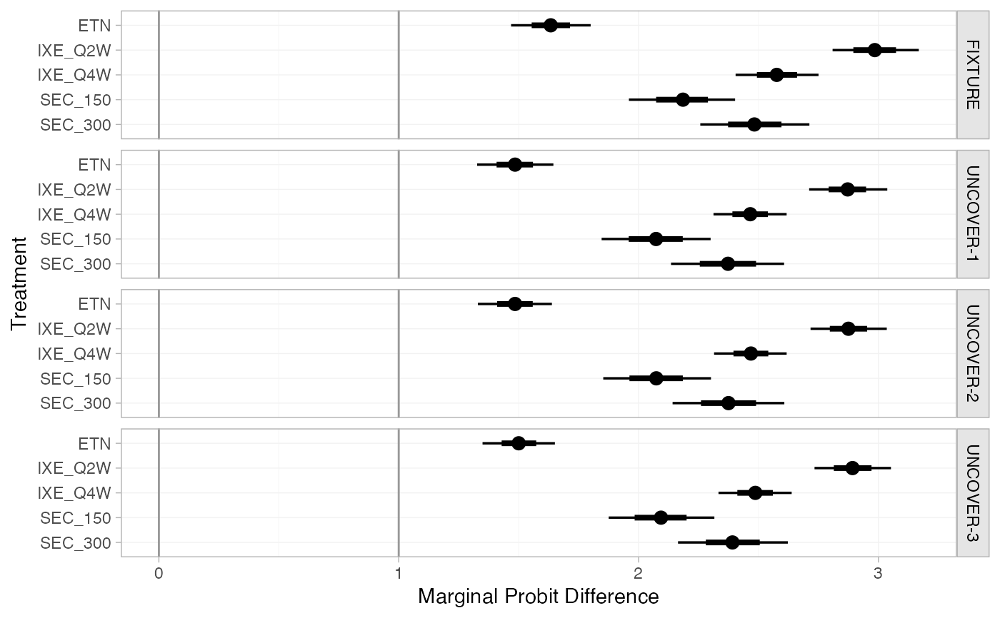
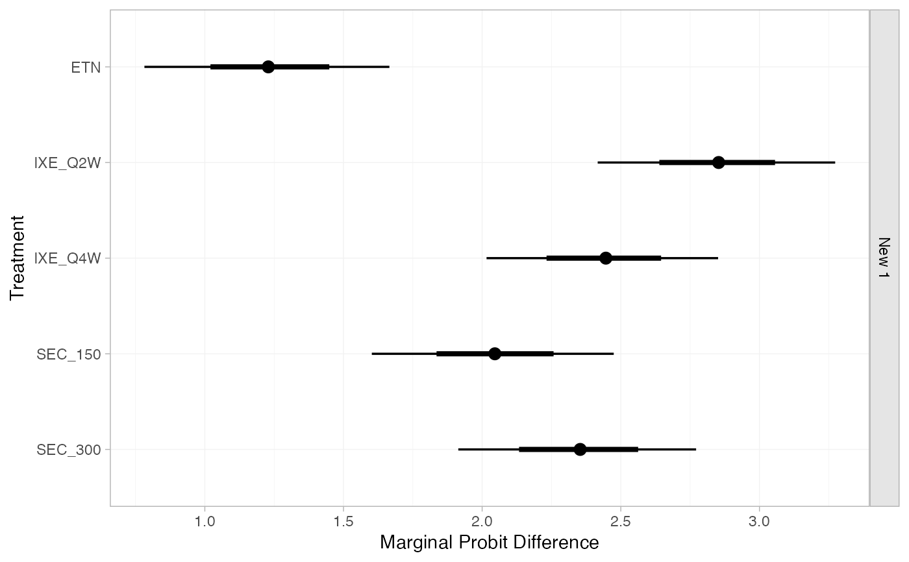
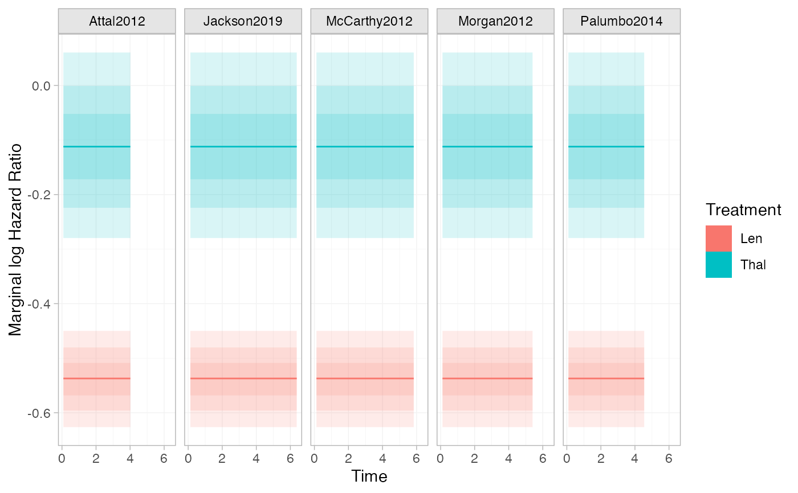
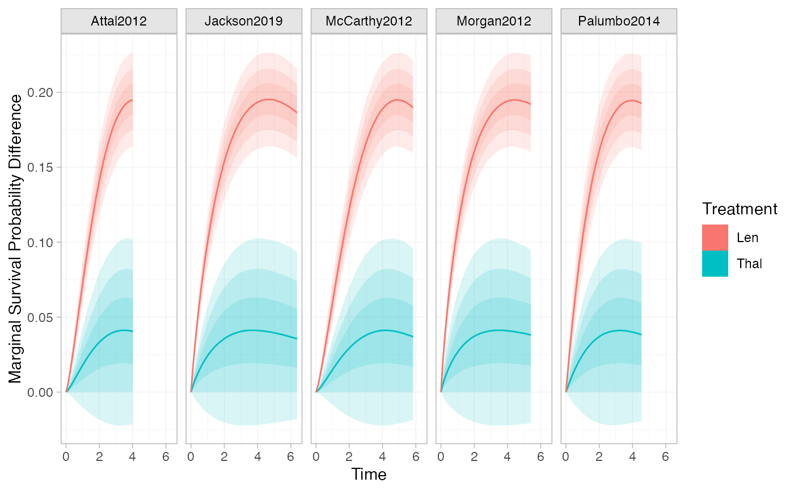

Generate population-average marginal treatment effects. These are formed from
population-average absolute predictions, so this function is a wrapper around
predict.stan_nma().
Arguments
- object
A
stan_nmaobject created bynma().- ...
Arguments passed to
predict.stan_nma(), for example to specify the covariate distribution and baseline risk for a target population, e.g.newdata,baseline, and related arguments. For survival outcomes,typecan also be specified to determine the quantity from which to form a marginal effect. For example,type = "hazard"withmtype = "ratio"produces marginal hazard ratios,type = "median"withmtype = "difference"produces marginal median survival time differences, and so on.- mtype
The type of marginal effect to construct from the average absolute effects, either
"difference"(the default) for a difference of absolute effects such as a risk difference,"ratio"for a ratio of absolute effects such as a risk ratio, or"link"for a difference on the scale of the link function used in fitting the model such as a marginal log odds ratio.- all_contrasts
Logical, generate estimates for all contrasts (
TRUE), or just the "basic" contrasts against the network reference treatment (FALSE)? DefaultFALSE.- trt_ref
Reference treatment to construct relative effects against, if
all_contrasts = FALSE. By default, relative effects will be against the network reference treatment. Coerced to character string.- probs
Numeric vector of quantiles of interest to present in computed summary, default
c(0.025, 0.25, 0.5, 0.75, 0.975)- predictive_distribution
Logical, when a random effects model has been fitted, should the predictive distribution for marginal effects in a new study be returned? Default
FALSE.- summary
Logical, calculate posterior summaries? Default
TRUE.
Value
A nma_summary object if summary = TRUE, otherwise a list
containing a 3D MCMC array of samples and (for regression models) a data
frame of study information.
Examples
## Smoking cessation
# \donttest{
# Run smoking RE NMA example if not already available
if (!exists("smk_fit_RE")) example("example_smk_re", run.donttest = TRUE)
# }
# \donttest{
# Marginal risk difference in each study population in the network
marginal_effects(smk_fit_RE, mtype = "difference")
#> ---------------------------------------------------------------------- Study: 1 ----
#>
#> mean sd 2.5% 25% 50% 75% 97.5% Bulk_ESS
#> marg[1: Group counselling] 0.11 0.06 0.02 0.06 0.10 0.14 0.27 2538
#> marg[1: Individual counselling] 0.07 0.03 0.02 0.05 0.07 0.09 0.15 1820
#> marg[1: Self-help] 0.04 0.04 -0.02 0.01 0.03 0.06 0.13 2042
#> Tail_ESS Rhat
#> marg[1: Group counselling] 2603 1
#> marg[1: Individual counselling] 2438 1
#> marg[1: Self-help] 2359 1
#>
#> ---------------------------------------------------------------------- Study: 2 ----
#>
#> mean sd 2.5% 25% 50% 75% 97.5% Bulk_ESS
#> marg[2: Group counselling] 0.12 0.08 0.02 0.07 0.11 0.17 0.33 3197
#> marg[2: Individual counselling] 0.09 0.05 0.02 0.05 0.08 0.11 0.21 2631
#> marg[2: Self-help] 0.04 0.05 -0.02 0.01 0.03 0.07 0.16 2385
#> Tail_ESS Rhat
#> marg[2: Group counselling] 3182 1
#> marg[2: Individual counselling] 2915 1
#> marg[2: Self-help] 2405 1
#>
#> ---------------------------------------------------------------------- Study: 3 ----
#>
#> mean sd 2.5% 25% 50% 75% 97.5% Bulk_ESS
#> marg[3: Group counselling] 0.16 0.09 0.03 0.10 0.16 0.21 0.36 2319
#> marg[3: Individual counselling] 0.11 0.04 0.04 0.08 0.11 0.14 0.20 1497
#> marg[3: Self-help] 0.06 0.05 -0.02 0.02 0.05 0.09 0.19 2005
#> Tail_ESS Rhat
#> marg[3: Group counselling] 2809 1
#> marg[3: Individual counselling] 2184 1
#> marg[3: Self-help] 2418 1
#>
#> ---------------------------------------------------------------------- Study: 4 ----
#>
#> mean sd 2.5% 25% 50% 75% 97.5% Bulk_ESS
#> marg[4: Group counselling] 0.04 0.03 0.00 0.02 0.03 0.05 0.13 2972
#> marg[4: Individual counselling] 0.03 0.02 0.01 0.01 0.02 0.03 0.07 2910
#> marg[4: Self-help] 0.01 0.02 0.00 0.00 0.01 0.02 0.06 2314
#> Tail_ESS Rhat
#> marg[4: Group counselling] 3066 1
#> marg[4: Individual counselling] 2858 1
#> marg[4: Self-help] 2389 1
#>
#> ---------------------------------------------------------------------- Study: 5 ----
#>
#> mean sd 2.5% 25% 50% 75% 97.5% Bulk_ESS
#> marg[5: Group counselling] 0.16 0.09 0.03 0.10 0.15 0.21 0.36 2294
#> marg[5: Individual counselling] 0.11 0.04 0.04 0.08 0.11 0.14 0.21 1483
#> marg[5: Self-help] 0.06 0.05 -0.02 0.02 0.05 0.09 0.19 2045
#> Tail_ESS Rhat
#> marg[5: Group counselling] 2734 1
#> marg[5: Individual counselling] 2181 1
#> marg[5: Self-help] 2433 1
#>
#> ---------------------------------------------------------------------- Study: 6 ----
#>
#> mean sd 2.5% 25% 50% 75% 97.5% Bulk_ESS
#> marg[6: Group counselling] 0.07 0.06 0.01 0.03 0.06 0.09 0.22 3213
#> marg[6: Individual counselling] 0.04 0.03 0.01 0.02 0.04 0.06 0.12 2958
#> marg[6: Self-help] 0.02 0.03 -0.01 0.01 0.02 0.03 0.10 2297
#> Tail_ESS Rhat
#> marg[6: Group counselling] 2763 1
#> marg[6: Individual counselling] 2588 1
#> marg[6: Self-help] 2566 1
#>
#> ---------------------------------------------------------------------- Study: 7 ----
#>
#> mean sd 2.5% 25% 50% 75% 97.5% Bulk_ESS
#> marg[7: Group counselling] 0.09 0.06 0.01 0.05 0.08 0.12 0.24 2794
#> marg[7: Individual counselling] 0.06 0.03 0.02 0.04 0.06 0.07 0.13 1815
#> marg[7: Self-help] 0.03 0.03 -0.01 0.01 0.03 0.05 0.11 2133
#> Tail_ESS Rhat
#> marg[7: Group counselling] 2904 1
#> marg[7: Individual counselling] 2686 1
#> marg[7: Self-help] 2419 1
#>
#> ---------------------------------------------------------------------- Study: 8 ----
#>
#> mean sd 2.5% 25% 50% 75% 97.5% Bulk_ESS
#> marg[8: Group counselling] 0.12 0.08 0.01 0.06 0.10 0.16 0.31 2988
#> marg[8: Individual counselling] 0.08 0.04 0.02 0.05 0.07 0.10 0.17 2505
#> marg[8: Self-help] 0.04 0.04 -0.02 0.01 0.03 0.06 0.15 2323
#> Tail_ESS Rhat
#> marg[8: Group counselling] 2840 1
#> marg[8: Individual counselling] 2606 1
#> marg[8: Self-help] 2331 1
#>
#> ---------------------------------------------------------------------- Study: 9 ----
#>
#> mean sd 2.5% 25% 50% 75% 97.5% Bulk_ESS
#> marg[9: Group counselling] 0.19 0.10 0.03 0.12 0.18 0.25 0.41 2520
#> marg[9: Individual counselling] 0.14 0.05 0.05 0.10 0.13 0.17 0.26 1856
#> marg[9: Self-help] 0.07 0.07 -0.03 0.03 0.06 0.11 0.23 2100
#> Tail_ESS Rhat
#> marg[9: Group counselling] 2790 1
#> marg[9: Individual counselling] 2303 1
#> marg[9: Self-help] 2388 1
#>
#> --------------------------------------------------------------------- Study: 10 ----
#>
#> mean sd 2.5% 25% 50% 75% 97.5% Bulk_ESS
#> marg[10: Group counselling] 0.17 0.09 0.03 0.11 0.16 0.22 0.37 2311
#> marg[10: Individual counselling] 0.12 0.04 0.04 0.09 0.11 0.14 0.22 1514
#> marg[10: Self-help] 0.06 0.06 -0.03 0.02 0.06 0.10 0.19 2002
#> Tail_ESS Rhat
#> marg[10: Group counselling] 2820 1
#> marg[10: Individual counselling] 2076 1
#> marg[10: Self-help] 2403 1
#>
#> --------------------------------------------------------------------- Study: 11 ----
#>
#> mean sd 2.5% 25% 50% 75% 97.5% Bulk_ESS
#> marg[11: Group counselling] 0.06 0.04 0.01 0.03 0.05 0.07 0.15 2470
#> marg[11: Individual counselling] 0.03 0.02 0.01 0.02 0.03 0.04 0.07 1785
#> marg[11: Self-help] 0.02 0.02 -0.01 0.01 0.02 0.03 0.06 2041
#> Tail_ESS Rhat
#> marg[11: Group counselling] 2794 1
#> marg[11: Individual counselling] 2364 1
#> marg[11: Self-help] 2330 1
#>
#> --------------------------------------------------------------------- Study: 12 ----
#>
#> mean sd 2.5% 25% 50% 75% 97.5% Bulk_ESS
#> marg[12: Group counselling] 0.16 0.08 0.03 0.10 0.15 0.21 0.35 2295
#> marg[12: Individual counselling] 0.11 0.04 0.04 0.08 0.10 0.13 0.20 1516
#> marg[12: Self-help] 0.06 0.05 -0.02 0.02 0.05 0.09 0.18 2027
#> Tail_ESS Rhat
#> marg[12: Group counselling] 2672 1
#> marg[12: Individual counselling] 2230 1
#> marg[12: Self-help] 2381 1
#>
#> --------------------------------------------------------------------- Study: 13 ----
#>
#> mean sd 2.5% 25% 50% 75% 97.5% Bulk_ESS
#> marg[13: Group counselling] 0.12 0.08 0.02 0.06 0.10 0.16 0.31 2686
#> marg[13: Individual counselling] 0.08 0.04 0.02 0.05 0.07 0.10 0.17 2207
#> marg[13: Self-help] 0.04 0.04 -0.02 0.01 0.03 0.06 0.15 2126
#> Tail_ESS Rhat
#> marg[13: Group counselling] 3027 1
#> marg[13: Individual counselling] 2796 1
#> marg[13: Self-help] 2500 1
#>
#> --------------------------------------------------------------------- Study: 14 ----
#>
#> mean sd 2.5% 25% 50% 75% 97.5% Bulk_ESS
#> marg[14: Group counselling] 0.14 0.08 0.02 0.08 0.13 0.18 0.32 2414
#> marg[14: Individual counselling] 0.09 0.04 0.03 0.07 0.09 0.12 0.18 1617
#> marg[14: Self-help] 0.05 0.05 -0.02 0.02 0.04 0.08 0.16 2089
#> Tail_ESS Rhat
#> marg[14: Group counselling] 2606 1
#> marg[14: Individual counselling] 2459 1
#> marg[14: Self-help] 2435 1
#>
#> --------------------------------------------------------------------- Study: 15 ----
#>
#> mean sd 2.5% 25% 50% 75% 97.5% Bulk_ESS
#> marg[15: Group counselling] 0.11 0.07 0.01 0.06 0.10 0.16 0.28 2998
#> marg[15: Individual counselling] 0.08 0.05 0.01 0.05 0.07 0.11 0.19 2639
#> marg[15: Self-help] 0.04 0.05 -0.02 0.01 0.03 0.06 0.16 2247
#> Tail_ESS Rhat
#> marg[15: Group counselling] 2926 1
#> marg[15: Individual counselling] 2775 1
#> marg[15: Self-help] 2343 1
#>
#> --------------------------------------------------------------------- Study: 16 ----
#>
#> mean sd 2.5% 25% 50% 75% 97.5% Bulk_ESS
#> marg[16: Group counselling] 0.12 0.07 0.02 0.07 0.11 0.16 0.29 2506
#> marg[16: Individual counselling] 0.08 0.04 0.03 0.05 0.08 0.10 0.17 1854
#> marg[16: Self-help] 0.04 0.04 -0.02 0.02 0.04 0.06 0.14 2054
#> Tail_ESS Rhat
#> marg[16: Group counselling] 2783 1
#> marg[16: Individual counselling] 2411 1
#> marg[16: Self-help] 2481 1
#>
#> --------------------------------------------------------------------- Study: 17 ----
#>
#> mean sd 2.5% 25% 50% 75% 97.5% Bulk_ESS
#> marg[17: Group counselling] 0.14 0.08 0.02 0.09 0.13 0.19 0.32 2287
#> marg[17: Individual counselling] 0.10 0.04 0.03 0.07 0.09 0.12 0.18 1482
#> marg[17: Self-help] 0.05 0.05 -0.02 0.02 0.05 0.08 0.16 2028
#> Tail_ESS Rhat
#> marg[17: Group counselling] 2757 1
#> marg[17: Individual counselling] 2231 1
#> marg[17: Self-help] 2373 1
#>
#> --------------------------------------------------------------------- Study: 18 ----
#>
#> mean sd 2.5% 25% 50% 75% 97.5% Bulk_ESS
#> marg[18: Group counselling] 0.13 0.07 0.02 0.07 0.11 0.16 0.31 2497
#> marg[18: Individual counselling] 0.08 0.04 0.03 0.06 0.08 0.10 0.17 1669
#> marg[18: Self-help] 0.05 0.04 -0.02 0.02 0.04 0.07 0.15 2040
#> Tail_ESS Rhat
#> marg[18: Group counselling] 2869 1
#> marg[18: Individual counselling] 2051 1
#> marg[18: Self-help] 2360 1
#>
#> --------------------------------------------------------------------- Study: 19 ----
#>
#> mean sd 2.5% 25% 50% 75% 97.5% Bulk_ESS
#> marg[19: Group counselling] 0.19 0.09 0.03 0.12 0.18 0.24 0.40 2292
#> marg[19: Individual counselling] 0.13 0.05 0.05 0.10 0.13 0.16 0.24 1488
#> marg[19: Self-help] 0.07 0.06 -0.03 0.03 0.06 0.11 0.21 2033
#> Tail_ESS Rhat
#> marg[19: Group counselling] 2771 1
#> marg[19: Individual counselling] 2052 1
#> marg[19: Self-help] 2388 1
#>
#> --------------------------------------------------------------------- Study: 20 ----
#>
#> mean sd 2.5% 25% 50% 75% 97.5% Bulk_ESS
#> marg[20: Group counselling] 0.11 0.06 0.02 0.06 0.10 0.14 0.25 2286
#> marg[20: Individual counselling] 0.07 0.03 0.02 0.05 0.07 0.09 0.13 1517
#> marg[20: Self-help] 0.04 0.04 -0.01 0.01 0.03 0.06 0.12 2021
#> Tail_ESS Rhat
#> marg[20: Group counselling] 2691 1
#> marg[20: Individual counselling] 2081 1
#> marg[20: Self-help] 2404 1
#>
#> --------------------------------------------------------------------- Study: 21 ----
#>
#> mean sd 2.5% 25% 50% 75% 97.5% Bulk_ESS
#> marg[21: Group counselling] 0.22 0.10 0.04 0.15 0.22 0.29 0.43 2659
#> marg[21: Individual counselling] 0.17 0.06 0.06 0.13 0.17 0.21 0.29 1897
#> marg[21: Self-help] 0.09 0.08 -0.05 0.04 0.09 0.14 0.26 2349
#> Tail_ESS Rhat
#> marg[21: Group counselling] 2974 1
#> marg[21: Individual counselling] 2487 1
#> marg[21: Self-help] 2345 1
#>
#> --------------------------------------------------------------------- Study: 22 ----
#>
#> mean sd 2.5% 25% 50% 75% 97.5% Bulk_ESS
#> marg[22: Group counselling] 0.14 0.08 0.02 0.08 0.12 0.18 0.33 3145
#> marg[22: Individual counselling] 0.10 0.06 0.02 0.06 0.09 0.13 0.24 2517
#> marg[22: Self-help] 0.05 0.05 -0.03 0.02 0.04 0.07 0.18 2337
#> Tail_ESS Rhat
#> marg[22: Group counselling] 3033 1
#> marg[22: Individual counselling] 2809 1
#> marg[22: Self-help] 2301 1
#>
#> --------------------------------------------------------------------- Study: 23 ----
#>
#> mean sd 2.5% 25% 50% 75% 97.5% Bulk_ESS
#> marg[23: Group counselling] 0.14 0.08 0.02 0.08 0.13 0.19 0.34 3054
#> marg[23: Individual counselling] 0.10 0.06 0.02 0.06 0.09 0.13 0.24 2826
#> marg[23: Self-help] 0.06 0.06 -0.02 0.02 0.04 0.08 0.21 2360
#> Tail_ESS Rhat
#> marg[23: Group counselling] 2507 1
#> marg[23: Individual counselling] 2771 1
#> marg[23: Self-help] 2298 1
#>
#> --------------------------------------------------------------------- Study: 24 ----
#>
#> mean sd 2.5% 25% 50% 75% 97.5% Bulk_ESS
#> marg[24: Group counselling] 0.11 0.08 0.01 0.05 0.09 0.15 0.31 3668
#> marg[24: Individual counselling] 0.08 0.05 0.01 0.04 0.06 0.10 0.20 3482
#> marg[24: Self-help] 0.04 0.05 -0.02 0.01 0.03 0.06 0.17 2411
#> Tail_ESS Rhat
#> marg[24: Group counselling] 3145 1
#> marg[24: Individual counselling] 2660 1
#> marg[24: Self-help] 2639 1
#>
# Since there are no covariates in the model, the marginal and conditional
# (log) odds ratios here coincide
marginal_effects(smk_fit_RE, mtype = "link")
#> ---------------------------------------------------------------------- Study: 1 ----
#>
#> mean sd 2.5% 25% 50% 75% 97.5% Bulk_ESS
#> marg[1: Group counselling] 1.11 0.44 0.28 0.81 1.10 1.39 1.99 2276
#> marg[1: Individual counselling] 0.85 0.24 0.38 0.69 0.84 1.00 1.34 1454
#> marg[1: Self-help] 0.48 0.40 -0.29 0.23 0.48 0.74 1.24 2017
#> Tail_ESS Rhat
#> marg[1: Group counselling] 2783 1
#> marg[1: Individual counselling] 2018 1
#> marg[1: Self-help] 2344 1
#>
#> ---------------------------------------------------------------------- Study: 2 ----
#>
#> mean sd 2.5% 25% 50% 75% 97.5% Bulk_ESS
#> marg[2: Group counselling] 1.11 0.44 0.28 0.81 1.10 1.39 1.99 2276
#> marg[2: Individual counselling] 0.85 0.24 0.38 0.69 0.84 1.00 1.34 1454
#> marg[2: Self-help] 0.48 0.40 -0.29 0.23 0.48 0.74 1.24 2017
#> Tail_ESS Rhat
#> marg[2: Group counselling] 2783 1
#> marg[2: Individual counselling] 2018 1
#> marg[2: Self-help] 2344 1
#>
#> ---------------------------------------------------------------------- Study: 3 ----
#>
#> mean sd 2.5% 25% 50% 75% 97.5% Bulk_ESS
#> marg[3: Group counselling] 1.11 0.44 0.28 0.81 1.10 1.39 1.99 2276
#> marg[3: Individual counselling] 0.85 0.24 0.38 0.69 0.84 1.00 1.34 1454
#> marg[3: Self-help] 0.48 0.40 -0.29 0.23 0.48 0.74 1.24 2017
#> Tail_ESS Rhat
#> marg[3: Group counselling] 2783 1
#> marg[3: Individual counselling] 2018 1
#> marg[3: Self-help] 2344 1
#>
#> ---------------------------------------------------------------------- Study: 4 ----
#>
#> mean sd 2.5% 25% 50% 75% 97.5% Bulk_ESS
#> marg[4: Group counselling] 1.11 0.44 0.28 0.81 1.10 1.39 1.99 2276
#> marg[4: Individual counselling] 0.85 0.24 0.38 0.69 0.84 1.00 1.34 1454
#> marg[4: Self-help] 0.48 0.40 -0.29 0.23 0.48 0.74 1.24 2017
#> Tail_ESS Rhat
#> marg[4: Group counselling] 2783 1
#> marg[4: Individual counselling] 2018 1
#> marg[4: Self-help] 2344 1
#>
#> ---------------------------------------------------------------------- Study: 5 ----
#>
#> mean sd 2.5% 25% 50% 75% 97.5% Bulk_ESS
#> marg[5: Group counselling] 1.11 0.44 0.28 0.81 1.10 1.39 1.99 2276
#> marg[5: Individual counselling] 0.85 0.24 0.38 0.69 0.84 1.00 1.34 1454
#> marg[5: Self-help] 0.48 0.40 -0.29 0.23 0.48 0.74 1.24 2017
#> Tail_ESS Rhat
#> marg[5: Group counselling] 2783 1
#> marg[5: Individual counselling] 2018 1
#> marg[5: Self-help] 2344 1
#>
#> ---------------------------------------------------------------------- Study: 6 ----
#>
#> mean sd 2.5% 25% 50% 75% 97.5% Bulk_ESS
#> marg[6: Group counselling] 1.11 0.44 0.28 0.81 1.10 1.39 1.99 2276
#> marg[6: Individual counselling] 0.85 0.24 0.38 0.69 0.84 1.00 1.34 1454
#> marg[6: Self-help] 0.48 0.40 -0.29 0.23 0.48 0.74 1.24 2017
#> Tail_ESS Rhat
#> marg[6: Group counselling] 2783 1
#> marg[6: Individual counselling] 2018 1
#> marg[6: Self-help] 2344 1
#>
#> ---------------------------------------------------------------------- Study: 7 ----
#>
#> mean sd 2.5% 25% 50% 75% 97.5% Bulk_ESS
#> marg[7: Group counselling] 1.11 0.44 0.28 0.81 1.10 1.39 1.99 2276
#> marg[7: Individual counselling] 0.85 0.24 0.38 0.69 0.84 1.00 1.34 1454
#> marg[7: Self-help] 0.48 0.40 -0.29 0.23 0.48 0.74 1.24 2017
#> Tail_ESS Rhat
#> marg[7: Group counselling] 2783 1
#> marg[7: Individual counselling] 2018 1
#> marg[7: Self-help] 2344 1
#>
#> ---------------------------------------------------------------------- Study: 8 ----
#>
#> mean sd 2.5% 25% 50% 75% 97.5% Bulk_ESS
#> marg[8: Group counselling] 1.11 0.44 0.28 0.81 1.10 1.39 1.99 2276
#> marg[8: Individual counselling] 0.85 0.24 0.38 0.69 0.84 1.00 1.34 1454
#> marg[8: Self-help] 0.48 0.40 -0.29 0.23 0.48 0.74 1.24 2017
#> Tail_ESS Rhat
#> marg[8: Group counselling] 2783 1
#> marg[8: Individual counselling] 2018 1
#> marg[8: Self-help] 2344 1
#>
#> ---------------------------------------------------------------------- Study: 9 ----
#>
#> mean sd 2.5% 25% 50% 75% 97.5% Bulk_ESS
#> marg[9: Group counselling] 1.11 0.44 0.28 0.81 1.10 1.39 1.99 2276
#> marg[9: Individual counselling] 0.85 0.24 0.38 0.69 0.84 1.00 1.34 1454
#> marg[9: Self-help] 0.48 0.40 -0.29 0.23 0.48 0.74 1.24 2017
#> Tail_ESS Rhat
#> marg[9: Group counselling] 2783 1
#> marg[9: Individual counselling] 2018 1
#> marg[9: Self-help] 2344 1
#>
#> --------------------------------------------------------------------- Study: 10 ----
#>
#> mean sd 2.5% 25% 50% 75% 97.5% Bulk_ESS
#> marg[10: Group counselling] 1.11 0.44 0.28 0.81 1.10 1.39 1.99 2276
#> marg[10: Individual counselling] 0.85 0.24 0.38 0.69 0.84 1.00 1.34 1454
#> marg[10: Self-help] 0.48 0.40 -0.29 0.23 0.48 0.74 1.24 2017
#> Tail_ESS Rhat
#> marg[10: Group counselling] 2783 1
#> marg[10: Individual counselling] 2018 1
#> marg[10: Self-help] 2344 1
#>
#> --------------------------------------------------------------------- Study: 11 ----
#>
#> mean sd 2.5% 25% 50% 75% 97.5% Bulk_ESS
#> marg[11: Group counselling] 1.11 0.44 0.28 0.81 1.10 1.39 1.99 2276
#> marg[11: Individual counselling] 0.85 0.24 0.38 0.69 0.84 1.00 1.34 1454
#> marg[11: Self-help] 0.48 0.40 -0.29 0.23 0.48 0.74 1.24 2017
#> Tail_ESS Rhat
#> marg[11: Group counselling] 2783 1
#> marg[11: Individual counselling] 2018 1
#> marg[11: Self-help] 2344 1
#>
#> --------------------------------------------------------------------- Study: 12 ----
#>
#> mean sd 2.5% 25% 50% 75% 97.5% Bulk_ESS
#> marg[12: Group counselling] 1.11 0.44 0.28 0.81 1.10 1.39 1.99 2276
#> marg[12: Individual counselling] 0.85 0.24 0.38 0.69 0.84 1.00 1.34 1454
#> marg[12: Self-help] 0.48 0.40 -0.29 0.23 0.48 0.74 1.24 2017
#> Tail_ESS Rhat
#> marg[12: Group counselling] 2783 1
#> marg[12: Individual counselling] 2018 1
#> marg[12: Self-help] 2344 1
#>
#> --------------------------------------------------------------------- Study: 13 ----
#>
#> mean sd 2.5% 25% 50% 75% 97.5% Bulk_ESS
#> marg[13: Group counselling] 1.11 0.44 0.28 0.81 1.10 1.39 1.99 2276
#> marg[13: Individual counselling] 0.85 0.24 0.38 0.69 0.84 1.00 1.34 1454
#> marg[13: Self-help] 0.48 0.40 -0.29 0.23 0.48 0.74 1.24 2017
#> Tail_ESS Rhat
#> marg[13: Group counselling] 2783 1
#> marg[13: Individual counselling] 2018 1
#> marg[13: Self-help] 2344 1
#>
#> --------------------------------------------------------------------- Study: 14 ----
#>
#> mean sd 2.5% 25% 50% 75% 97.5% Bulk_ESS
#> marg[14: Group counselling] 1.11 0.44 0.28 0.81 1.10 1.39 1.99 2276
#> marg[14: Individual counselling] 0.85 0.24 0.38 0.69 0.84 1.00 1.34 1454
#> marg[14: Self-help] 0.48 0.40 -0.29 0.23 0.48 0.74 1.24 2017
#> Tail_ESS Rhat
#> marg[14: Group counselling] 2783 1
#> marg[14: Individual counselling] 2018 1
#> marg[14: Self-help] 2344 1
#>
#> --------------------------------------------------------------------- Study: 15 ----
#>
#> mean sd 2.5% 25% 50% 75% 97.5% Bulk_ESS
#> marg[15: Group counselling] 1.11 0.44 0.28 0.81 1.10 1.39 1.99 2276
#> marg[15: Individual counselling] 0.85 0.24 0.38 0.69 0.84 1.00 1.34 1454
#> marg[15: Self-help] 0.48 0.40 -0.29 0.23 0.48 0.74 1.24 2017
#> Tail_ESS Rhat
#> marg[15: Group counselling] 2783 1
#> marg[15: Individual counselling] 2018 1
#> marg[15: Self-help] 2344 1
#>
#> --------------------------------------------------------------------- Study: 16 ----
#>
#> mean sd 2.5% 25% 50% 75% 97.5% Bulk_ESS
#> marg[16: Group counselling] 1.11 0.44 0.28 0.81 1.10 1.39 1.99 2276
#> marg[16: Individual counselling] 0.85 0.24 0.38 0.69 0.84 1.00 1.34 1454
#> marg[16: Self-help] 0.48 0.40 -0.29 0.23 0.48 0.74 1.24 2017
#> Tail_ESS Rhat
#> marg[16: Group counselling] 2783 1
#> marg[16: Individual counselling] 2018 1
#> marg[16: Self-help] 2344 1
#>
#> --------------------------------------------------------------------- Study: 17 ----
#>
#> mean sd 2.5% 25% 50% 75% 97.5% Bulk_ESS
#> marg[17: Group counselling] 1.11 0.44 0.28 0.81 1.10 1.39 1.99 2276
#> marg[17: Individual counselling] 0.85 0.24 0.38 0.69 0.84 1.00 1.34 1454
#> marg[17: Self-help] 0.48 0.40 -0.29 0.23 0.48 0.74 1.24 2017
#> Tail_ESS Rhat
#> marg[17: Group counselling] 2783 1
#> marg[17: Individual counselling] 2018 1
#> marg[17: Self-help] 2344 1
#>
#> --------------------------------------------------------------------- Study: 18 ----
#>
#> mean sd 2.5% 25% 50% 75% 97.5% Bulk_ESS
#> marg[18: Group counselling] 1.11 0.44 0.28 0.81 1.10 1.39 1.99 2276
#> marg[18: Individual counselling] 0.85 0.24 0.38 0.69 0.84 1.00 1.34 1454
#> marg[18: Self-help] 0.48 0.40 -0.29 0.23 0.48 0.74 1.24 2017
#> Tail_ESS Rhat
#> marg[18: Group counselling] 2783 1
#> marg[18: Individual counselling] 2018 1
#> marg[18: Self-help] 2344 1
#>
#> --------------------------------------------------------------------- Study: 19 ----
#>
#> mean sd 2.5% 25% 50% 75% 97.5% Bulk_ESS
#> marg[19: Group counselling] 1.11 0.44 0.28 0.81 1.10 1.39 1.99 2276
#> marg[19: Individual counselling] 0.85 0.24 0.38 0.69 0.84 1.00 1.34 1454
#> marg[19: Self-help] 0.48 0.40 -0.29 0.23 0.48 0.74 1.24 2017
#> Tail_ESS Rhat
#> marg[19: Group counselling] 2783 1
#> marg[19: Individual counselling] 2018 1
#> marg[19: Self-help] 2344 1
#>
#> --------------------------------------------------------------------- Study: 20 ----
#>
#> mean sd 2.5% 25% 50% 75% 97.5% Bulk_ESS
#> marg[20: Group counselling] 1.11 0.44 0.28 0.81 1.10 1.39 1.99 2276
#> marg[20: Individual counselling] 0.85 0.24 0.38 0.69 0.84 1.00 1.34 1454
#> marg[20: Self-help] 0.48 0.40 -0.29 0.23 0.48 0.74 1.24 2017
#> Tail_ESS Rhat
#> marg[20: Group counselling] 2783 1
#> marg[20: Individual counselling] 2018 1
#> marg[20: Self-help] 2344 1
#>
#> --------------------------------------------------------------------- Study: 21 ----
#>
#> mean sd 2.5% 25% 50% 75% 97.5% Bulk_ESS
#> marg[21: Group counselling] 1.11 0.44 0.28 0.81 1.10 1.39 1.99 2276
#> marg[21: Individual counselling] 0.85 0.24 0.38 0.69 0.84 1.00 1.34 1454
#> marg[21: Self-help] 0.48 0.40 -0.29 0.23 0.48 0.74 1.24 2017
#> Tail_ESS Rhat
#> marg[21: Group counselling] 2783 1
#> marg[21: Individual counselling] 2018 1
#> marg[21: Self-help] 2344 1
#>
#> --------------------------------------------------------------------- Study: 22 ----
#>
#> mean sd 2.5% 25% 50% 75% 97.5% Bulk_ESS
#> marg[22: Group counselling] 1.11 0.44 0.28 0.81 1.10 1.39 1.99 2276
#> marg[22: Individual counselling] 0.85 0.24 0.38 0.69 0.84 1.00 1.34 1454
#> marg[22: Self-help] 0.48 0.40 -0.29 0.23 0.48 0.74 1.24 2017
#> Tail_ESS Rhat
#> marg[22: Group counselling] 2783 1
#> marg[22: Individual counselling] 2018 1
#> marg[22: Self-help] 2344 1
#>
#> --------------------------------------------------------------------- Study: 23 ----
#>
#> mean sd 2.5% 25% 50% 75% 97.5% Bulk_ESS
#> marg[23: Group counselling] 1.11 0.44 0.28 0.81 1.10 1.39 1.99 2276
#> marg[23: Individual counselling] 0.85 0.24 0.38 0.69 0.84 1.00 1.34 1454
#> marg[23: Self-help] 0.48 0.40 -0.29 0.23 0.48 0.74 1.24 2017
#> Tail_ESS Rhat
#> marg[23: Group counselling] 2783 1
#> marg[23: Individual counselling] 2018 1
#> marg[23: Self-help] 2344 1
#>
#> --------------------------------------------------------------------- Study: 24 ----
#>
#> mean sd 2.5% 25% 50% 75% 97.5% Bulk_ESS
#> marg[24: Group counselling] 1.11 0.44 0.28 0.81 1.10 1.39 1.99 2276
#> marg[24: Individual counselling] 0.85 0.24 0.38 0.69 0.84 1.00 1.34 1454
#> marg[24: Self-help] 0.48 0.40 -0.29 0.23 0.48 0.74 1.24 2017
#> Tail_ESS Rhat
#> marg[24: Group counselling] 2783 1
#> marg[24: Individual counselling] 2018 1
#> marg[24: Self-help] 2344 1
#>
relative_effects(smk_fit_RE)
#> mean sd 2.5% 25% 50% 75% 97.5% Bulk_ESS
#> d[Group counselling] 1.11 0.44 0.28 0.81 1.10 1.39 1.99 2276
#> d[Individual counselling] 0.85 0.24 0.38 0.69 0.84 1.00 1.34 1454
#> d[Self-help] 0.48 0.40 -0.29 0.23 0.48 0.74 1.24 2017
#> Tail_ESS Rhat
#> d[Group counselling] 2783 1
#> d[Individual counselling] 2018 1
#> d[Self-help] 2344 1
# Marginal risk differences in a population with 67 observed events out of
# 566 individuals on No Intervention, corresponding to a Beta(67, 566 - 67)
# distribution on the baseline probability of response
(smk_rd_RE <- marginal_effects(smk_fit_RE,
baseline = distr(qbeta, 67, 566 - 67),
baseline_type = "response",
mtype = "difference"))
#> mean sd 2.5% 25% 50% 75% 97.5% Bulk_ESS
#> marg[Group counselling] 0.18 0.09 0.03 0.11 0.17 0.23 0.38 2276
#> marg[Individual counselling] 0.12 0.05 0.04 0.09 0.12 0.15 0.23 1513
#> marg[Self-help] 0.07 0.06 -0.03 0.03 0.06 0.10 0.20 2032
#> Tail_ESS Rhat
#> marg[Group counselling] 2743 1
#> marg[Individual counselling] 2019 1
#> marg[Self-help] 2373 1
plot(smk_rd_RE)

# }
## Plaque psoriasis ML-NMR
# \donttest{
# Run plaque psoriasis ML-NMR example if not already available
if (!exists("pso_fit")) example("example_pso_mlnmr", run.donttest = TRUE)
#>
#> exmp__> # Set up plaque psoriasis network combining IPD and AgD
#> exmp__> library(dplyr)
#>
#> exmp__> pso_ipd <- filter(plaque_psoriasis_ipd,
#> exmp__+ studyc %in% c("UNCOVER-1", "UNCOVER-2", "UNCOVER-3"))
#>
#> exmp__> pso_agd <- filter(plaque_psoriasis_agd,
#> exmp__+ studyc == "FIXTURE")
#>
#> exmp__> head(pso_ipd)
#> studyc trtc_long trtc trtn pasi75 pasi90 pasi100 age bmi pasi_w0
#> 1 UNCOVER-1 Ixekizumab Q2W IXE_Q2W 2 0 0 0 34 32.2 18.2
#> 2 UNCOVER-1 Ixekizumab Q2W IXE_Q2W 2 1 0 0 64 41.9 23.4
#> 3 UNCOVER-1 Ixekizumab Q2W IXE_Q2W 2 1 1 0 42 26.2 12.8
#> 4 UNCOVER-1 Ixekizumab Q2W IXE_Q2W 2 0 0 0 45 52.9 36.0
#> 5 UNCOVER-1 Ixekizumab Q2W IXE_Q2W 2 1 0 0 67 22.9 20.9
#> 6 UNCOVER-1 Ixekizumab Q2W IXE_Q2W 2 1 1 1 57 22.4 18.2
#> male bsa weight durnpso prevsys psa
#> 1 TRUE 18 98.1 6.7 TRUE TRUE
#> 2 TRUE 33 129.6 14.5 FALSE TRUE
#> 3 TRUE 33 78.0 26.5 TRUE FALSE
#> 4 FALSE 50 139.9 25.0 TRUE TRUE
#> 5 FALSE 35 54.2 11.9 TRUE FALSE
#> 6 TRUE 29 67.5 15.2 TRUE FALSE
#>
#> exmp__> head(pso_agd)
#> studyc trtc_long trtc trtn pasi75_r pasi75_n pasi90_r pasi90_n
#> 1 FIXTURE Etanercept ETN 4 142 323 67 323
#> 2 FIXTURE Placebo PBO 1 16 324 5 324
#> 3 FIXTURE Secukinumab 150 mg SEC_150 5 219 327 137 327
#> 4 FIXTURE Secukinumab 300 mg SEC_300 6 249 323 175 323
#> pasi100_r pasi100_n sample_size_w0 age_mean age_sd bmi_mean bmi_sd
#> 1 14 323 326 43.8 13.0 28.7 5.9
#> 2 0 324 326 44.1 12.6 27.9 6.1
#> 3 47 327 327 45.4 12.9 28.4 5.9
#> 4 78 323 327 44.5 13.2 28.4 6.4
#> pasi_w0_mean pasi_w0_sd male bsa_mean bsa_sd weight_mean weight_sd
#> 1 23.2 9.8 71.2 33.6 18.0 84.6 20.5
#> 2 24.1 10.5 72.7 35.2 19.1 82.0 20.4
#> 3 23.7 10.5 72.2 34.5 19.4 83.6 20.8
#> 4 23.9 9.9 68.5 34.3 19.2 83.0 21.6
#> durnpso_mean durnpso_sd prevsys psa
#> 1 16.4 12.0 65.6 13.5
#> 2 16.6 11.6 62.6 15.0
#> 3 17.3 12.2 64.8 15.0
#> 4 15.8 12.3 63.0 15.3
#>
#> exmp__> pso_ipd <- pso_ipd %>%
#> exmp__+ mutate(# Variable transformations
#> exmp__+ bsa = bsa / 100,
#> exmp__+ prevsys = as.numeric(prevsys),
#> exmp__+ psa = as.numeric(psa),
#> exmp__+ weight = weight / 10,
#> exmp__+ durnpso = durnpso / 10,
#> exmp__+ # Treatment classes
#> exmp__+ trtclass = case_when(trtn == 1 ~ "Placebo",
#> exmp__+ trtn %in% c(2, 3, 5, 6) ~ "IL blocker",
#> exmp__+ trtn == 4 ~ "TNFa blocker"),
#> exmp__+ # Check complete cases for covariates of interest
#> exmp__+ complete = complete.cases(durnpso, prevsys, bsa, weight, psa)
#> exmp__+ )
#>
#> exmp__> pso_agd <- pso_agd %>%
#> exmp__+ mutate(
#> exmp__+ # Variable transformations
#> exmp__+ bsa_mean = bsa_mean / 100,
#> exmp__+ bsa_sd = bsa_sd / 100,
#> exmp__+ prevsys = prevsys / 100,
#> exmp__+ psa = psa / 100,
#> exmp__+ weight_mean = weight_mean / 10,
#> exmp__+ weight_sd = weight_sd / 10,
#> exmp__+ durnpso_mean = durnpso_mean / 10,
#> exmp__+ durnpso_sd = durnpso_sd / 10,
#> exmp__+ # Treatment classes
#> exmp__+ trtclass = case_when(trtn == 1 ~ "Placebo",
#> exmp__+ trtn %in% c(2, 3, 5, 6) ~ "IL blocker",
#> exmp__+ trtn == 4 ~ "TNFa blocker")
#> exmp__+ )
#>
#> exmp__> # Exclude small number of individuals with missing covariates
#> exmp__> pso_ipd <- filter(pso_ipd, complete)
#>
#> exmp__> pso_net <- combine_network(
#> exmp__+ set_ipd(pso_ipd,
#> exmp__+ study = studyc,
#> exmp__+ trt = trtc,
#> exmp__+ r = pasi75,
#> exmp__+ trt_class = trtclass),
#> exmp__+ set_agd_arm(pso_agd,
#> exmp__+ study = studyc,
#> exmp__+ trt = trtc,
#> exmp__+ r = pasi75_r,
#> exmp__+ n = pasi75_n,
#> exmp__+ trt_class = trtclass)
#> exmp__+ )
#>
#> exmp__> # Print network details
#> exmp__> pso_net
#> A network with 3 IPD studies, and 1 AgD study (arm-based).
#>
#> ------------------------------------------------------------------- IPD studies ----
#> Study Treatment arms
#> UNCOVER-1 3: IXE_Q2W | IXE_Q4W | PBO
#> UNCOVER-2 4: ETN | IXE_Q2W | IXE_Q4W | PBO
#> UNCOVER-3 4: ETN | IXE_Q2W | IXE_Q4W | PBO
#>
#> Outcome type: binary
#> ------------------------------------------------------- AgD studies (arm-based) ----
#> Study Treatment arms
#> FIXTURE 4: PBO | ETN | SEC_150 | SEC_300
#>
#> Outcome type: count
#> ------------------------------------------------------------------------------------
#> Total number of treatments: 6, in 3 classes
#> Total number of studies: 4
#> Reference treatment is: PBO
#> Network is connected
#>
#> exmp__> # Add integration points to the network
#> exmp__> pso_net <- add_integration(pso_net,
#> exmp__+ durnpso = distr(qgamma, mean = durnpso_mean, sd = durnpso_sd),
#> exmp__+ prevsys = distr(qbern, prob = prevsys),
#> exmp__+ bsa = distr(qlogitnorm, mean = bsa_mean, sd = bsa_sd),
#> exmp__+ weight = distr(qgamma, mean = weight_mean, sd = weight_sd),
#> exmp__+ psa = distr(qbern, prob = psa),
#> exmp__+ n_int = 64)
#> Using weighted average correlation matrix computed from IPD studies.
#>
#> exmp__> ## No test:
#> exmp__> # Fitting a ML-NMR model.
#> exmp__> # Specify a regression model to include effect modifier interactions for five
#> exmp__> # covariates, along with main (prognostic) effects. We use a probit link and
#> exmp__> # specify that the two-parameter Binomial approximation for the aggregate-level
#> exmp__> # likelihood should be used. We set treatment-covariate interactions to be equal
#> exmp__> # within each class. We narrow the possible range for random initial values with
#> exmp__> # init_r = 0.1, since probit models in particular are often hard to initialise.
#> exmp__> # Using the QR decomposition greatly improves sampling efficiency here, as is
#> exmp__> # often the case for regression models.
#> exmp__> pso_fit <- nma(pso_net, ## Don't show:
#> exmp__+ refresh = if (interactive()) 200 else 0,
#> exmp__+ ## End(Don't show)
#> exmp__+ trt_effects = "fixed",
#> exmp__+ link = "probit",
#> exmp__+ likelihood = "bernoulli2",
#> exmp__+ regression = ~(durnpso + prevsys + bsa + weight + psa)*.trt,
#> exmp__+ class_interactions = "common",
#> exmp__+ prior_intercept = normal(scale = 10),
#> exmp__+ prior_trt = normal(scale = 10),
#> exmp__+ prior_reg = normal(scale = 10),
#> exmp__+ init_r = 0.1,
#> exmp__+ QR = TRUE)
#> Note: Setting "PBO" as the network reference treatment.
#>
#> exmp__> pso_fit
#> A fixed effects ML-NMR with a bernoulli2 likelihood (probit link).
#> Regression model: ~(durnpso + prevsys + bsa + weight + psa) * .trt.
#> Centred covariates at the following overall mean values:
#> durnpso prevsys bsa weight psa
#> 1.8134535 0.6450416 0.2909089 8.9369318 0.2147914
#> Inference for Stan model: binomial_2par.
#> 4 chains, each with iter=2000; warmup=1000; thin=1;
#> post-warmup draws per chain=1000, total post-warmup draws=4000.
#>
#> mean se_mean sd 2.5% 25%
#> beta[durnpso] 0.04 0.00 0.06 -0.08 0.00
#> beta[prevsys] -0.14 0.00 0.16 -0.46 -0.25
#> beta[bsa] -0.07 0.01 0.45 -0.98 -0.35
#> beta[weight] 0.04 0.00 0.03 -0.02 0.02
#> beta[psa] -0.08 0.00 0.16 -0.41 -0.18
#> beta[durnpso:.trtclassTNFa blocker] -0.03 0.00 0.07 -0.17 -0.08
#> beta[durnpso:.trtclassIL blocker] -0.01 0.00 0.07 -0.15 -0.06
#> beta[prevsys:.trtclassTNFa blocker] 0.20 0.00 0.19 -0.17 0.07
#> beta[prevsys:.trtclassIL blocker] 0.07 0.00 0.18 -0.28 -0.05
#> beta[bsa:.trtclassTNFa blocker] 0.06 0.01 0.53 -0.97 -0.30
#> beta[bsa:.trtclassIL blocker] 0.29 0.01 0.50 -0.68 -0.05
#> beta[weight:.trtclassTNFa blocker] -0.17 0.00 0.04 -0.24 -0.19
#> beta[weight:.trtclassIL blocker] -0.10 0.00 0.03 -0.16 -0.12
#> beta[psa:.trtclassTNFa blocker] -0.06 0.00 0.21 -0.45 -0.19
#> beta[psa:.trtclassIL blocker] 0.01 0.00 0.18 -0.35 -0.11
#> d[ETN] 1.55 0.00 0.08 1.40 1.50
#> d[IXE_Q2W] 2.96 0.00 0.08 2.80 2.90
#> d[IXE_Q4W] 2.54 0.00 0.08 2.39 2.49
#> d[SEC_150] 2.15 0.00 0.11 1.92 2.07
#> d[SEC_300] 2.45 0.00 0.12 2.22 2.37
#> lp__ -1576.35 0.09 3.45 -1583.92 -1578.51
#> 50% 75% 97.5% n_eff Rhat
#> beta[durnpso] 0.04 0.08 0.16 6799 1
#> beta[prevsys] -0.14 -0.03 0.17 5745 1
#> beta[bsa] -0.06 0.23 0.79 5796 1
#> beta[weight] 0.04 0.06 0.10 5287 1
#> beta[psa] -0.08 0.03 0.24 6214 1
#> beta[durnpso:.trtclassTNFa blocker] -0.03 0.02 0.11 6691 1
#> beta[durnpso:.trtclassIL blocker] -0.01 0.03 0.12 8571 1
#> beta[prevsys:.trtclassTNFa blocker] 0.20 0.33 0.56 6223 1
#> beta[prevsys:.trtclassIL blocker] 0.07 0.19 0.42 6663 1
#> beta[bsa:.trtclassTNFa blocker] 0.05 0.40 1.14 6426 1
#> beta[bsa:.trtclassIL blocker] 0.28 0.61 1.29 7358 1
#> beta[weight:.trtclassTNFa blocker] -0.17 -0.14 -0.09 5855 1
#> beta[weight:.trtclassIL blocker] -0.10 -0.08 -0.03 5963 1
#> beta[psa:.trtclassTNFa blocker] -0.06 0.07 0.35 6991 1
#> beta[psa:.trtclassIL blocker] 0.01 0.13 0.36 7264 1
#> d[ETN] 1.55 1.61 1.71 4242 1
#> d[IXE_Q2W] 2.96 3.01 3.12 4706 1
#> d[IXE_Q4W] 2.54 2.60 2.71 4702 1
#> d[SEC_150] 2.15 2.22 2.37 4966 1
#> d[SEC_300] 2.45 2.53 2.68 5856 1
#> lp__ -1576.05 -1573.87 -1570.42 1628 1
#>
#> Samples were drawn using NUTS(diag_e) at Fri Mar 21 13:29:26 2025.
#> For each parameter, n_eff is a crude measure of effective sample size,
#> and Rhat is the potential scale reduction factor on split chains (at
#> convergence, Rhat=1).
#>
#> exmp__> ## End(No test)
#> exmp__>
#> exmp__> ## Don't show:
#> exmp__> if (requireNamespace("pkgdown", quietly = TRUE) && pkgdown::in_pkgdown()) {
#> exmp__+ assign("pso_net", pso_net, .GlobalEnv)
#> exmp__+ assign("pso_fit", pso_fit, .GlobalEnv)
#> exmp__+ }
#>
#> exmp__> ## End(Don't show)
#> exmp__>
#> exmp__>
#> exmp__>
# }
# \donttest{
# Population-average marginal probit differences in each study in the network
(pso_marg <- marginal_effects(pso_fit, mtype = "link"))
#> ---------------------------------------------------------------- Study: FIXTURE ----
#>
#> mean sd 2.5% 25% 50% 75% 97.5% Bulk_ESS Tail_ESS
#> marg[FIXTURE: ETN] 1.63 0.08 1.47 1.58 1.63 1.69 1.80 4576 3324
#> marg[FIXTURE: IXE_Q2W] 2.98 0.09 2.81 2.92 2.98 3.05 3.17 5142 2918
#> marg[FIXTURE: IXE_Q4W] 2.58 0.09 2.40 2.52 2.58 2.64 2.75 5462 3236
#> marg[FIXTURE: SEC_150] 2.18 0.11 1.96 2.11 2.19 2.26 2.40 4922 3514
#> marg[FIXTURE: SEC_300] 2.48 0.12 2.26 2.41 2.48 2.56 2.71 5748 3333
#> Rhat
#> marg[FIXTURE: ETN] 1
#> marg[FIXTURE: IXE_Q2W] 1
#> marg[FIXTURE: IXE_Q4W] 1
#> marg[FIXTURE: SEC_150] 1
#> marg[FIXTURE: SEC_300] 1
#>
#> -------------------------------------------------------------- Study: UNCOVER-1 ----
#>
#> mean sd 2.5% 25% 50% 75% 97.5% Bulk_ESS Tail_ESS
#> marg[UNCOVER-1: ETN] 1.48 0.08 1.33 1.43 1.49 1.54 1.64 4752 3400
#> marg[UNCOVER-1: IXE_Q2W] 2.87 0.08 2.71 2.81 2.87 2.93 3.04 5542 3392
#> marg[UNCOVER-1: IXE_Q4W] 2.47 0.08 2.31 2.41 2.47 2.52 2.62 5686 3334
#> marg[UNCOVER-1: SEC_150] 2.07 0.12 1.85 1.99 2.07 2.15 2.30 5671 3159
#> marg[UNCOVER-1: SEC_300] 2.37 0.12 2.14 2.29 2.37 2.46 2.61 6571 3451
#> Rhat
#> marg[UNCOVER-1: ETN] 1
#> marg[UNCOVER-1: IXE_Q2W] 1
#> marg[UNCOVER-1: IXE_Q4W] 1
#> marg[UNCOVER-1: SEC_150] 1
#> marg[UNCOVER-1: SEC_300] 1
#>
#> -------------------------------------------------------------- Study: UNCOVER-2 ----
#>
#> mean sd 2.5% 25% 50% 75% 97.5% Bulk_ESS Tail_ESS
#> marg[UNCOVER-2: ETN] 1.48 0.08 1.33 1.43 1.49 1.54 1.64 4867 3454
#> marg[UNCOVER-2: IXE_Q2W] 2.87 0.08 2.72 2.82 2.87 2.93 3.03 5711 3358
#> marg[UNCOVER-2: IXE_Q4W] 2.47 0.08 2.31 2.41 2.47 2.52 2.62 5815 3385
#> marg[UNCOVER-2: SEC_150] 2.07 0.12 1.85 2.00 2.07 2.15 2.30 5807 3656
#> marg[UNCOVER-2: SEC_300] 2.37 0.12 2.14 2.30 2.37 2.45 2.61 6694 3355
#> Rhat
#> marg[UNCOVER-2: ETN] 1
#> marg[UNCOVER-2: IXE_Q2W] 1
#> marg[UNCOVER-2: IXE_Q4W] 1
#> marg[UNCOVER-2: SEC_150] 1
#> marg[UNCOVER-2: SEC_300] 1
#>
#> -------------------------------------------------------------- Study: UNCOVER-3 ----
#>
#> mean sd 2.5% 25% 50% 75% 97.5% Bulk_ESS Tail_ESS
#> marg[UNCOVER-3: ETN] 1.50 0.08 1.35 1.45 1.50 1.55 1.65 4805 3496
#> marg[UNCOVER-3: IXE_Q2W] 2.89 0.08 2.73 2.84 2.89 2.95 3.05 5666 3298
#> marg[UNCOVER-3: IXE_Q4W] 2.49 0.08 2.33 2.43 2.49 2.54 2.64 5782 3289
#> marg[UNCOVER-3: SEC_150] 2.09 0.11 1.88 2.02 2.09 2.17 2.32 5657 3486
#> marg[UNCOVER-3: SEC_300] 2.39 0.12 2.16 2.32 2.39 2.47 2.62 6545 3046
#> Rhat
#> marg[UNCOVER-3: ETN] 1
#> marg[UNCOVER-3: IXE_Q2W] 1
#> marg[UNCOVER-3: IXE_Q4W] 1
#> marg[UNCOVER-3: SEC_150] 1
#> marg[UNCOVER-3: SEC_300] 1
#>
plot(pso_marg, ref_line = c(0, 1))

# Population-average marginal probit differences in a new target population,
# with means and SDs or proportions given by
new_agd_int <- data.frame(
bsa_mean = 0.6,
bsa_sd = 0.3,
prevsys = 0.1,
psa = 0.2,
weight_mean = 10,
weight_sd = 1,
durnpso_mean = 3,
durnpso_sd = 1
)
# We need to add integration points to this data frame of new data
# We use the weighted mean correlation matrix computed from the IPD studies
new_agd_int <- add_integration(new_agd_int,
durnpso = distr(qgamma, mean = durnpso_mean, sd = durnpso_sd),
prevsys = distr(qbern, prob = prevsys),
bsa = distr(qlogitnorm, mean = bsa_mean, sd = bsa_sd),
weight = distr(qgamma, mean = weight_mean, sd = weight_sd),
psa = distr(qbern, prob = psa),
cor = pso_net$int_cor,
n_int = 64)
# Population-average marginal probit differences of achieving PASI 75 in this
# target population, given a Normal(-1.75, 0.08^2) distribution on the
# baseline probit-probability of response on Placebo (at the reference levels
# of the covariates), are given by
(pso_marg_new <- marginal_effects(pso_fit,
mtype = "link",
newdata = new_agd_int,
baseline = distr(qnorm, -1.75, 0.08)))
#> ------------------------------------------------------------------ Study: New 1 ----
#>
#> mean sd 2.5% 25% 50% 75% 97.5% Bulk_ESS Tail_ESS Rhat
#> marg[New 1: ETN] 1.23 0.22 0.79 1.09 1.23 1.38 1.66 7099 2873 1
#> marg[New 1: IXE_Q2W] 2.85 0.21 2.43 2.71 2.86 3.00 3.27 7324 3260 1
#> marg[New 1: IXE_Q4W] 2.44 0.21 2.02 2.31 2.45 2.59 2.84 7647 3090 1
#> marg[New 1: SEC_150] 2.05 0.22 1.61 1.89 2.05 2.20 2.47 7807 3072 1
#> marg[New 1: SEC_300] 2.35 0.22 1.91 2.20 2.36 2.50 2.78 7741 2912 1
#>
plot(pso_marg_new)

# }
## Progression free survival with newly-diagnosed multiple myeloma
# \donttest{
# Run newly-diagnosed multiple myeloma example if not already available
if (!exists("ndmm_fit")) example("example_ndmm", run.donttest = TRUE)
# }
# \donttest{
# We can produce a range of marginal effects from models with survival
# outcomes, specified with the mtype and type arguments. For example:
# Marginal survival probability difference at 5 years, all contrasts
marginal_effects(ndmm_fit, type = "survival", mtype = "difference",
times = 5, all_contrasts = TRUE)
#> -------------------------------------------------------------- Study: Attal2012 ----
#>
#> .time mean sd 2.5% 25% 50% 75% 97.5%
#> marg[Attal2012: Len vs. Pbo, 1] 5 0.19 0.02 0.16 0.18 0.19 0.20 0.22
#> marg[Attal2012: Thal vs. Pbo, 1] 5 0.04 0.03 -0.02 0.02 0.04 0.06 0.10
#> marg[Attal2012: Thal vs. Len, 1] 5 -0.15 0.03 -0.22 -0.17 -0.15 -0.13 -0.08
#> Bulk_ESS Tail_ESS Rhat
#> marg[Attal2012: Len vs. Pbo, 1] 4911 3221 1
#> marg[Attal2012: Thal vs. Pbo, 1] 4970 2945 1
#> marg[Attal2012: Thal vs. Len, 1] 5251 2761 1
#>
#> ------------------------------------------------------------ Study: Jackson2019 ----
#>
#> .time mean sd 2.5% 25% 50% 75%
#> marg[Jackson2019: Len vs. Pbo, 1] 5 0.19 0.02 0.16 0.18 0.19 0.21
#> marg[Jackson2019: Thal vs. Pbo, 1] 5 0.04 0.03 -0.02 0.02 0.04 0.06
#> marg[Jackson2019: Thal vs. Len, 1] 5 -0.15 0.04 -0.22 -0.18 -0.15 -0.13
#> 97.5% Bulk_ESS Tail_ESS Rhat
#> marg[Jackson2019: Len vs. Pbo, 1] 0.23 5107 2909 1
#> marg[Jackson2019: Thal vs. Pbo, 1] 0.10 4960 2993 1
#> marg[Jackson2019: Thal vs. Len, 1] -0.08 5304 2802 1
#>
#> ----------------------------------------------------------- Study: McCarthy2012 ----
#>
#> .time mean sd 2.5% 25% 50% 75%
#> marg[McCarthy2012: Len vs. Pbo, 1] 5 0.20 0.02 0.16 0.18 0.20 0.21
#> marg[McCarthy2012: Thal vs. Pbo, 1] 5 0.04 0.03 -0.02 0.02 0.04 0.06
#> marg[McCarthy2012: Thal vs. Len, 1] 5 -0.15 0.04 -0.22 -0.18 -0.15 -0.13
#> 97.5% Bulk_ESS Tail_ESS Rhat
#> marg[McCarthy2012: Len vs. Pbo, 1] 0.23 5059 2842 1
#> marg[McCarthy2012: Thal vs. Pbo, 1] 0.10 4968 2993 1
#> marg[McCarthy2012: Thal vs. Len, 1] -0.08 5308 2650 1
#>
#> ------------------------------------------------------------- Study: Morgan2012 ----
#>
#> .time mean sd 2.5% 25% 50% 75%
#> marg[Morgan2012: Len vs. Pbo, 1] 5 0.19 0.02 0.16 0.18 0.19 0.21
#> marg[Morgan2012: Thal vs. Pbo, 1] 5 0.04 0.03 -0.02 0.02 0.04 0.06
#> marg[Morgan2012: Thal vs. Len, 1] 5 -0.15 0.04 -0.22 -0.18 -0.15 -0.13
#> 97.5% Bulk_ESS Tail_ESS Rhat
#> marg[Morgan2012: Len vs. Pbo, 1] 0.23 5127 2948 1
#> marg[Morgan2012: Thal vs. Pbo, 1] 0.10 4935 2992 1
#> marg[Morgan2012: Thal vs. Len, 1] -0.08 5298 2764 1
#>
#> ------------------------------------------------------------ Study: Palumbo2014 ----
#>
#> .time mean sd 2.5% 25% 50% 75%
#> marg[Palumbo2014: Len vs. Pbo, 1] 5 0.19 0.02 0.16 0.18 0.19 0.20
#> marg[Palumbo2014: Thal vs. Pbo, 1] 5 0.04 0.03 -0.02 0.02 0.04 0.06
#> marg[Palumbo2014: Thal vs. Len, 1] 5 -0.15 0.03 -0.22 -0.17 -0.15 -0.13
#> 97.5% Bulk_ESS Tail_ESS Rhat
#> marg[Palumbo2014: Len vs. Pbo, 1] 0.22 4979 2916 1
#> marg[Palumbo2014: Thal vs. Pbo, 1] 0.10 4987 2968 1
#> marg[Palumbo2014: Thal vs. Len, 1] -0.08 5296 2906 1
#>
# Marginal difference in RMST up to 5 years
marginal_effects(ndmm_fit, type = "rmst", mtype = "difference", times = 5)
#> -------------------------------------------------------------- Study: Attal2012 ----
#>
#> .time mean sd 2.5% 25% 50% 75% 97.5% Bulk_ESS
#> marg[Attal2012: Len, 1] 5 0.69 0.06 0.58 0.65 0.69 0.73 0.81 4895
#> marg[Attal2012: Thal, 1] 5 0.15 0.12 -0.09 0.07 0.16 0.23 0.38 4959
#> Tail_ESS Rhat
#> marg[Attal2012: Len, 1] 2866 1
#> marg[Attal2012: Thal, 1] 2993 1
#>
#> ------------------------------------------------------------ Study: Jackson2019 ----
#>
#> .time mean sd 2.5% 25% 50% 75% 97.5% Bulk_ESS
#> marg[Jackson2019: Len, 1] 5 0.74 0.06 0.62 0.70 0.74 0.78 0.86 4860
#> marg[Jackson2019: Thal, 1] 5 0.16 0.13 -0.09 0.08 0.17 0.25 0.41 4929
#> Tail_ESS Rhat
#> marg[Jackson2019: Len, 1] 2926 1
#> marg[Jackson2019: Thal, 1] 3016 1
#>
#> ----------------------------------------------------------- Study: McCarthy2012 ----
#>
#> .time mean sd 2.5% 25% 50% 75% 97.5% Bulk_ESS
#> marg[McCarthy2012: Len, 1] 5 0.64 0.06 0.53 0.60 0.64 0.68 0.75 4937
#> marg[McCarthy2012: Thal, 1] 5 0.14 0.11 -0.08 0.07 0.15 0.22 0.36 4936
#> Tail_ESS Rhat
#> marg[McCarthy2012: Len, 1] 3006 1
#> marg[McCarthy2012: Thal, 1] 2993 1
#>
#> ------------------------------------------------------------- Study: Morgan2012 ----
#>
#> .time mean sd 2.5% 25% 50% 75% 97.5% Bulk_ESS
#> marg[Morgan2012: Len, 1] 5 0.76 0.06 0.64 0.72 0.76 0.80 0.88 4941
#> marg[Morgan2012: Thal, 1] 5 0.17 0.13 -0.09 0.08 0.17 0.26 0.43 4953
#> Tail_ESS Rhat
#> marg[Morgan2012: Len, 1] 2778 1
#> marg[Morgan2012: Thal, 1] 2993 1
#>
#> ------------------------------------------------------------ Study: Palumbo2014 ----
#>
#> .time mean sd 2.5% 25% 50% 75% 97.5% Bulk_ESS
#> marg[Palumbo2014: Len, 1] 5 0.75 0.07 0.63 0.71 0.75 0.80 0.89 4805
#> marg[Palumbo2014: Thal, 1] 5 0.17 0.13 -0.09 0.08 0.17 0.25 0.42 4973
#> Tail_ESS Rhat
#> marg[Palumbo2014: Len, 1] 2995 1
#> marg[Palumbo2014: Thal, 1] 3016 1
#>
# Marginal median survival time ratios
marginal_effects(ndmm_fit, type = "median", mtype = "ratio")
#> -------------------------------------------------------------- Study: Attal2012 ----
#>
#> mean sd 2.5% 25% 50% 75% 97.5% Bulk_ESS Tail_ESS
#> marg[Attal2012: Len] 1.52 0.06 1.41 1.48 1.51 1.56 1.64 4316 3166
#> marg[Attal2012: Thal] 1.09 0.07 0.95 1.04 1.09 1.14 1.25 4995 2959
#> Rhat
#> marg[Attal2012: Len] 1
#> marg[Attal2012: Thal] 1
#>
#> ------------------------------------------------------------ Study: Jackson2019 ----
#>
#> mean sd 2.5% 25% 50% 75% 97.5% Bulk_ESS Tail_ESS
#> marg[Jackson2019: Len] 1.78 0.09 1.62 1.72 1.78 1.84 1.96 4625 2259
#> marg[Jackson2019: Thal] 1.13 0.11 0.94 1.06 1.13 1.20 1.36 4933 3016
#> Rhat
#> marg[Jackson2019: Len] 1
#> marg[Jackson2019: Thal] 1
#>
#> ----------------------------------------------------------- Study: McCarthy2012 ----
#>
#> mean sd 2.5% 25% 50% 75% 97.5% Bulk_ESS Tail_ESS
#> marg[McCarthy2012: Len] 1.52 0.06 1.41 1.48 1.51 1.56 1.64 4544 2944
#> marg[McCarthy2012: Thal] 1.09 0.07 0.95 1.04 1.09 1.14 1.25 4970 2992
#> Rhat
#> marg[McCarthy2012: Len] 1
#> marg[McCarthy2012: Thal] 1
#>
#> ------------------------------------------------------------- Study: Morgan2012 ----
#>
#> mean sd 2.5% 25% 50% 75% 97.5% Bulk_ESS Tail_ESS
#> marg[Morgan2012: Len] 1.85 0.10 1.65 1.78 1.84 1.91 2.06 5283 2906
#> marg[Morgan2012: Thal] 1.14 0.12 0.93 1.06 1.14 1.21 1.39 4921 2883
#> Rhat
#> marg[Morgan2012: Len] 1
#> marg[Morgan2012: Thal] 1
#>
#> ------------------------------------------------------------ Study: Palumbo2014 ----
#>
#> mean sd 2.5% 25% 50% 75% 97.5% Bulk_ESS Tail_ESS
#> marg[Palumbo2014: Len] 1.71 0.1 1.53 1.63 1.70 1.77 1.92 4344 2791
#> marg[Palumbo2014: Thal] 1.12 0.1 0.94 1.05 1.12 1.18 1.33 5015 2984
#> Rhat
#> marg[Palumbo2014: Len] 1
#> marg[Palumbo2014: Thal] 1
#>
# Marginal log hazard ratios
# With no covariates in the model, these are constant over time and study
# populations, and are equal to the log hazard ratios from relative_effects()
plot(marginal_effects(ndmm_fit, type = "hazard", mtype = "link"),
# The hazard is infinite at t=0 in some studies, giving undefined logHRs at t=0
na.rm = TRUE)

# The NDMM vignette demonstrates the production of time-varying marginal
# hazard ratios from a ML-NMR model that includes covariates, see
# `vignette("example_ndmm")`
# Marginal survival difference over time
plot(marginal_effects(ndmm_fit, type = "survival", mtype = "difference"))

# }